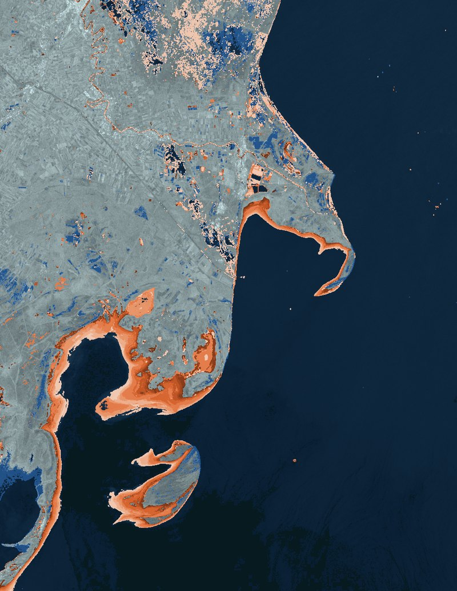

282.2km²
The sea is retreating from the delta
The Caspian Sea has fallen to a historic low and new islands are emerging (sources below). On this flat coast, that much water from October 2017 was dry land by October 2026.
The Kura River delta is turning from water into land.
Radar satellites see this coast through cloud, by day and by night. Caspian Eye turns NISAR L-band and Sentinel-1 scenes into maps and numbers that show where, when and how much of the shallow sea became dry ground.

39.60°N 48.85°E 38.85°N 49.60°EIndependent concept prototype built only on open data. It is not affiliated with or endorsed by NASA, ISRO, JPL, ESA or the Alaska Satellite Facility. All numbers on this page were computed from the satellite data listed under Sources.
The Caspian Sea has fallen to a historic low and new islands are emerging (sources below). On this flat coast, that much water from October 2017 was dry land by October 2026.
Qızılağac Bay is a Ramsar-listed wetland and state nature reserve. Its open water shrank by a quarter between October 2017 and October 2026.
Optical satellites lose cloudy days. Radar measures in any weather, day and night. NISAR's L-band waves are 24 cm long, so they can also reach water under reeds.
Choose a layer and two dates, then drag the slider under the map to compare them. Pick a zone to see its numbers; the panel on the right explains the change in plain language.
Open water mapped from Sentinel-1 for the selected zone. The October series compares the same season each year, so seasonal flooding does not drive the trend.
km², Sentinel-1 orbit 108, VH threshold per scene. For the whole AOI, sea state and farmland add year-to-year noise; the pilot zones are steadier.
km² of pixels that were water in Oct 2017 and land in every later October from that year
km², counted inside the area NISAR imaged on every date.
Query of NASA's Common Metadata Repository for NISAR Level-2 GCOV granules intersecting the pilot area.
Each mark is one GCOV product; color shows its release level. Rows are sorted by how much of the pilot area the frame covers.
NISAR browse images are 8-bit visualizations (~183 m), not calibrated γ⁰. Dark pixels were split with Otsu's method and compared with the nearest Sentinel-1 water map.
Calibrated L-band γ⁰ (HH, HV) read directly from each HDF5 product (about 1.4 GB) by byte range, reprojected from UTM 38N to the 20 m analysis grid. Water: a per-scene two-class model on smoothed HH and HV (5×5), trained on reference areas that Sentinel-1 mapped as water, or as land, on all six 2026 dates. Flooded-vegetation candidate: HH > −3 dB and HH−HV > 10 dB. In a test on 25 June, a single HV threshold reached only 78–80% agreement with Sentinel-1, because at 24 cm the smooth, dry semi-desert looks almost as dark as water. NISAR and Sentinel-1 maps line up to within one 20 m pixel.
Sentinel-1 water maps compared pixel by pixel with Sentinel-2 water (NDWI > 0) on near-simultaneous cloud-free dates. Clouds, shadows and no-data pixels are excluded using the Sentinel-2 scene classification.
One relative orbit (108, descending) so every date has the same viewing geometry. October scenes for the 2017–2026 trend; monthly scenes for 2026.
Sentinel-1 RTC γ⁰ (VV, VH) and NISAR L2 GCOV γ⁰ (HH, HV) on one 20 m UTM 39N grid. 3×3 boxcar on linear power to reduce speckle.
C-band: open water where smoothed VH is below a per-scene Otsu threshold. L-band: per-scene two-class model on HH and HV, trained on stable reference areas. Both then get a 3×3 majority filter. Flooded-vegetation candidate from double bounce: VV > −3 dB and VV−VH > 9 dB (C-band), HH > −3 dB and HH−HV > 10 dB (L-band).
Pixel-wise transitions between any two dates, only where both dates are valid. Areas summed at 0.0004 km² per pixel inside each pilot polygon.
Per-pixel confidence from distance to the threshold (≥2 dB = high). Agreement with Sentinel-2 NDWI, NISAR GCOV and NISAR quicklooks reported above.
Done. 4 NISAR tracks, 10 frame stacks and their dates catalogued for the AOI.
Done: NISAR GCOV for 10 dates and Sentinel-1 for 15 dates, with water and change maps and area statistics.
This page: date comparison, zone statistics, explanation panel. Next: a hosted map service.
Optical check done. Needs field data and review by SAR hydrology experts.